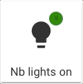
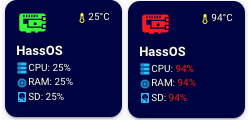
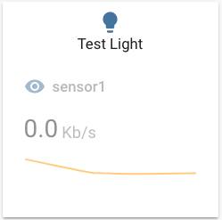

Custom Fields
Custom fields support, using the custom_fields object, enables you to create your own fields on top of the pre-defined ones (name, state, label and icon). This is an advanced feature which leverages (if you require it) the CSS Grid.
Custom fields also support embeded cards, see example below.
Each custom field supports its own styling config, the name needs to match between both objects needs to match:
type: custom:button-card
[...]
custom_fields:
test_element: My test element
styles:
custom_fields:
test_element:
- color: red
- font-size: 13px
Examples are better than a long text, so here you go:
- Placing an element wherever you want (that means bypassing the grid). Set the grid to
position: relativeand set the element toposition: absolute

type: custom:button-card
icon: mdi:lightbulb
aspect_ratio: 1/1
name: Nb lights on
styles:
grid:
- position: relative
custom_fields:
notification:
- background-color: |
[[[
if (states['input_number.test'].state == 0)
return "green";
return "red";
]]]
- border-radius: 50%
- position: absolute
- left: 60%
- top: 10%
- height: 20px
- width: 20px
- font-size: 8px
- line-height: 20px
custom_fields:
notification: |
[[[ return Math.floor(states['input_number.test'].state / 10) ]]]
- Or you can use the grid. Each element will have it's name positioned as the
grid-area:

type: custom:button-card
entity: 'sensor.raspi_temp'
icon: 'mdi:raspberry-pi'
aspect_ratio: 1/1
name: HassOS
styles:
card:
- background-color: '#000044'
- border-radius: 10%
- padding: 10%
- color: ivory
- font-size: 10px
- text-shadow: 0px 0px 5px black
- text-transform: capitalize
grid:
- grid-template-areas: '"i temp" "n n" "cpu cpu" "ram ram" "sd sd"'
- grid-template-columns: 1fr 1fr
- grid-template-rows: 1fr min-content min-content min-content min-content
name:
- font-weight: bold
- font-size: 13px
- color: white
- align-self: middle
- justify-self: start
- padding-bottom: 4px
img_cell:
- justify-content: start
- align-items: start
- margin: none
icon:
- color: |
[[[
if (entity.state < 60) return 'lime';
if (entity.state >= 60 && entity.state < 80) return 'orange';
else return 'red';
]]]
- width: 70%
- margin-top: -10%
custom_fields:
temp:
- align-self: start
- justify-self: end
cpu:
- padding-bottom: 2px
- align-self: middle
- justify-self: start
- --text-color-sensor: '[[[ if (states["sensor.raspi_cpu"].state > 80) return "red"; ]]]'
ram:
- padding-bottom: 2px
- align-self: middle
- justify-self: start
- --text-color-sensor: '[[[ if (states["sensor.raspi_ram"].state > 80) return "red"; ]]]'
sd:
- align-self: middle
- justify-self: start
- --text-color-sensor: '[[[ if (states["sensor.raspi_sd"].state > 80) return "red"; ]]]'
custom_fields:
temp: |
[[[
return `<ha-icon
icon="mdi:thermometer"
style="width: 12px; height: 12px; color: yellow;">
</ha-icon><span>${entity.state}°C</span>`
]]]
cpu: |
[[[
return `<ha-icon
icon="mdi:server"
style="width: 12px; height: 12px; color: deepskyblue;">
</ha-icon><span>CPU: <span style="color: var(--text-color-sensor);">${states['sensor.raspi_cpu'].state}%</span></span>`
]]]
ram: |
[[[
return `<ha-icon
icon="mdi:memory"
style="width: 12px; height: 12px; color: deepskyblue;">
</ha-icon><span>RAM: <span style="color: var(--text-color-sensor);">${states['sensor.raspi_ram'].state}%</span></span>`
]]]
sd: |
[[[
return `<ha-icon
icon="mdi:harddisk"
style="width: 12px; height: 12px; color: deepskyblue;">
</ha-icon><span>SD: <span style="color: var(--text-color-sensor);">${states['sensor.raspi_sd'].state}%</span></span>`
]]]
- Or you can embed a card (or multiple) inside the button card (note, this configuration uses card-mod to remove the
box-shadowof the sensor card.
This is what the style inside the embedded card is for):

type: custom:button-card
aspect_ratio: 1/1
custom_fields:
graph:
card:
type: sensor
entity: sensor.sensor1
graph: line
card_mod:
style: |
ha-card {
box-shadow: none;
}
styles:
custom_fields:
graph:
- filter: opacity(50%)
- overflow: unset
card:
- overflow: unset
grid:
- grid-template-areas: '"i" "n" "graph"'
- grid-template-columns: 1fr
- grid-template-rows: 1fr min-content min-content
entity: light.test_light
hold_action:
action: more-info
To use nested templates in a custom_field (eg. you embed a custom:button-card inside a Custom Field and then template is for the custom:button-card), then use an extra [] pair around your template. You may also set do_not_eval to true to skip evaluating the template (DEPRECATED). See JS Templates for more information on using templates in nested custom:button-card.
type: custom:button-card
styles:
grid:
- grid-template-areas: "'test1' 'nested_template' 'deprecated'"
variables:
b: 42
custom_fields:
test1:
card:
type: custom:button-card
variables:
c: 42
name: '[[[ return `B: ${variables.b} / C: ${variables.c}` ]]]' # (1)!
nested_template:
card:
type: custom:button-card
variables:
c: 42
name: '[[[[ return `B: ${variables.b} / C: ${variables.c}` ]]]]' # (2)!
deprecated:
do_not_eval: true # (3)!
card:
type: custom:button-card
variables:
c: 42
name: '[[[ return `B: ${variables.b} / C: ${variables.c}` ]]]' # (4)!
- This will return: B: 42 / C: undefined as it is evaluated in the context of the main card (which doesn't know about c)
- This will return: B: undefined / C: 42 as it is evaluated in the context of the local button-card inside the custom_field (which doesn't know about b)
- (DEPRECATED) This stops the evaluation of js templates for the card object in this custom field
- This will return: B: undefined / C: 42 as it is evaluated in the context of the local button-card inside the custom_field (which doesn't know about b)